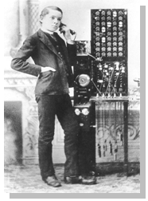
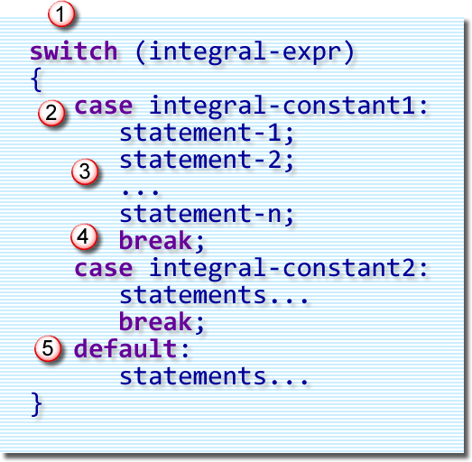
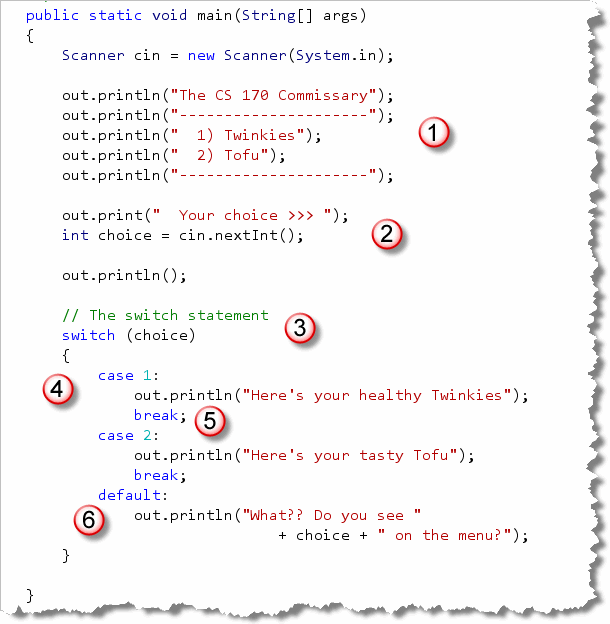
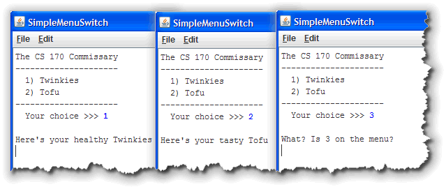

Both the nested if statements and the ladder-style
if-else-if statements
provide you with the tools you need to do
multi-way branches. But there's still one more
multi-way selection tool
that you should have in your programming toolbox.

Another Java control structure, theswitch statement,
provides an even more efficient way to select between several
different alternatives, provided you can live with its
limitations and somewhat idiosyncratic behavior.
Many other languages have a multi-way branch statement,
usually called a case statement. If you've programmed in
one of these different languages, you might find the term
switch a little unusual. The name seems much more
logical, however, if you think of a railway switching yard or
a telephone switchboard, rather than a light-switch.
The switch statement is different than
the if-else statement because the
switch is based upon an integer evaluation,
rather than upon a boolean test.
Let's briefly look at the syntax of the switch
statement and then we'll take a look at how it works.
Switch Syntax
Here's an illustration that shows the syntax of the
switch statement:

As you can see, theswitch statement
consists of five different parts.
- The
switchkeyword, followed by an integral expression enclosed in parentheses. This expression is called the switch selector. The selector can be a variable or any expression, as long as the type of the expression isbyte,short,int, orchar. You cannot use floating-point,longorStringselectors. (Note: in Java 7 and later, you may useStringselectors.) The body of theswitchstatement, which follows, is enclosed in braces. - Any number of
caselabels. Eachcaselabel consists of the keywordcase, followed by a constant expression. Thecaselabel ends with a colon, not a semicolon. - Any number of statements following each
caselabel. These do not have to be enclosed in braces as with a loop orifbody. - A
breakstatement to end eachcase. - A
default:label to handle the unmatched cases.
Let's look at each of these pieces to see how they work together.
How it works
When a switch statement is encountered, the
first thing that happens is that its switch selector, or
integer "test" expression is evaluated. After the test expression is
evaluated the following steps are performed:
- The list of labeled constants is scanned, looking
for a match. If an exact match is found:
- Java begins executing the first line of code immediately
following the matching
caselabel. - Each line of code following the
caselabel is executed sequentially until either abreakstatement is encountered or all of the statements in theswitchbody have been executed.
- Java begins executing the first line of code immediately
following the matching
- If no match is found, then execution jumps to the
statement following the
default:label, if one was supplied. - If no match is found and there is no
default:label, then execution jumps to the first statement following theswitchbody.
A Simple Example
A very common use for a switch statement is to
implement a menu. Let's create a simple menu that allows the
user to select 1) for Twinkies, and 2) for Tofu; something
for everyone. Here's the code:

You can find this in the programSimpleMenuSwitch.java in this
week's code folder. Let's look at the code:
- The first section of the program creates a
Scannerobject for input and then prints a menu. - After printing the menu, the program creates an
intvariable namedchoiceand allows the user to initialize it. - The
choicevariable is used as the switch selector.The
switchstatement can evaluateint, byte, short, char, orString(in Java 7+) selector values. It will not work with double, long or any other object types. - Each case label contains a constant
value to be matched against the switch selector.
The value stored in
choicewill be compared to each of the case label values and if an exact match is found, the program will jump to the first line of code in that block. - Each case block should (almost always) end with
a
breakstatement. If you don't have abreakthen control will continue to the next case block, even if the selector does not match that block's case label. - Finally, if you want to do something if the switch
selector fails to match any case, then you can add an optional
defaultblock. This block is traditionally placed last (which is why I haven't included abreakstatement). If you don't have adefaultblock then nothing would happen at all when the user entered an invalid selection.
Here's what the program looks like as it runs:

Switch Pitfalls
There are two common problems students encounter when learning
to use the switch statement.
The first problem has to do with the case
labels. Each case label must include:
- A constant integer expression (not including
long), followed by a colon. - This means you can't use variables
or ranges as part of your
caselabel.
The second problem has to do with forgetting to use
a break statement. If you don't include a
break statement, then all of the statements in
the switch body, following your case
are executed as well. This is called fall through and is
a very common programming error when using a switch
statement.
Fallthrough is not, necessarily and error, though; itcan be useful if you want to execute the same code for several different case labels. Here's an example:
switch(c)
{
case 'A': case 'a': case 'E': case 'e': ....
vowels++;
...
}
The Conditional Operator
One problem with using
if—else is that you can't use an
if—else in a formula or
expression;
if—else is a statement; it does
not produce a value. That means, you must create an additional
variable, like bonusPcnt in the earlier example.
Java's, conditional operator provides a way to use an
if-else condition inside an expression.
The conditional operator is sometime called the ternary,
or teriary operator, because it is the only operator
to require three operands. It's also sometimes known as the
selection operator, since it selects from two values:
 The operands of the conditional operator are:
The operands of the conditional operator are:
- The condition or test expression: This must be
some expression that evaluates to a
booleanvalue. - The true result: If the condition portion is
true, then the whole expression takes on the value listed in this clause. This value can be of any type. - The false result: If the condition portion is
false, then the whole expression takes on the value listed here. This value can also be of any type, but should match the type of thetrueresult.
The condition is separated from the results portion by a
question mark ( ? ). The results are separated from each
other by a colon ( : ).
Using the conditional operator, we could calculate
bonusAmt like
this:
 This example has been formatted so that each operand used
by the conditional operator appears on a separate line, but
that's not required.
This example has been formatted so that each operand used
by the conditional operator appears on a separate line, but
that's not required.
Here's the WageCalculator example once again,
this time using the conditional operator to calculate
the value for grossPay:
 You'll have to decide whether you find this clearer or
not. I think that I prefer the
You'll have to decide whether you find this clearer or
not. I think that I prefer the if-else instead.
You can also nest another conditional expression (using the conditional operator) inside the true or false portions of a first conditional expression. This quickly becomes unreadable, however, and, despite what you might think, may even execute more slowly. You should attempt to write source code that is clear and to-the-point, not code that uses the fewest possible lines.